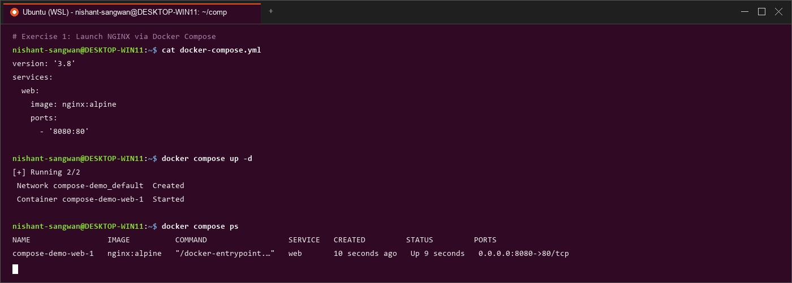

Docker Compose vs Docker Run & WordPress Stack
Imperative CLI vs Declarative YAML, Multi-container Orchestration, Custom Builds & Swarm Clustering
Docker Run vs Docker Compose Mapping
| Docker Run Flag | Docker Compose Equivalent | Description |
|---|---|---|
-p 8080:80 | ports: | Port mapping |
-v host:container | volumes: | Volume mount |
-e KEY=value | environment: | Environment variable |
--name | container_name: | Container name |
--network | networks: | Network link |
--restart | restart: | Restart policy |
--memory / --cpus | deploy.resources.limits | Resource constraints |
Task 1: Single Container Comparison

Fig 1: Nginx container execution using imperative
docker run vs declarative docker compose up -d.Task 2: Multi-Container Application (WordPress + MySQL)

Fig 2: Deploying WordPress + MySQL using manual CLI commands vs single-file Compose stack.
Task 3: Conversions (Web App & Volume + Network)

Fig 3: Converting complex
docker run commands to structured docker-compose.yml.️ Task 4: Resource Limits Conversion

Fig 4: Specifying memory and CPU limits using
deploy.resources.limits in Compose.Task 5: Replace Standard Image with Dockerfile

Fig 5: Custom Node.js application built directly via Compose
build: directive.Task 6: Multi-Stage Dockerfile with Compose

Fig 6: Building a multi-stage Dockerfile using Compose with 35% image size reduction.
Experiment 6B: Production WordPress + MySQL Stack

Fig 7: Deploying `wp-compose-lab` with persistent volumes and testing horizontal container scaling (`--scale wordpress=3`).
Swarm Clustering & Production Scaling

Fig 8: Initializing Docker Swarm (`docker swarm init`), stack deployment (`docker stack deploy`), and multi-replica scaling.
Compare: Compose vs Swarm
| Feature | Docker Compose | Docker Swarm |
|---|---|---|
| Scope | Single host | Multi-node cluster |
| Scaling | Manual | Built-in |
| Load Balancing | No | Yes (Ingress Routing Mesh) |
| Self-healing | No | Yes |
| Rolling Updates | No | Yes |